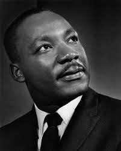
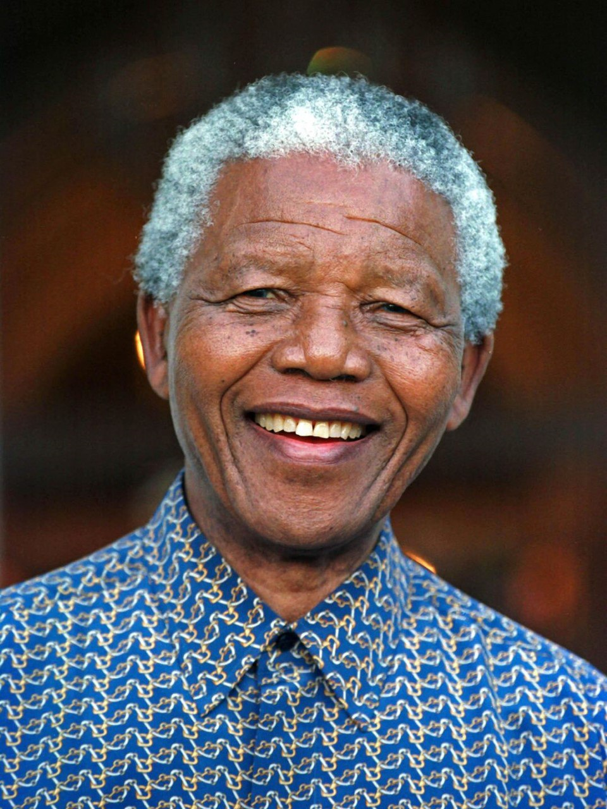
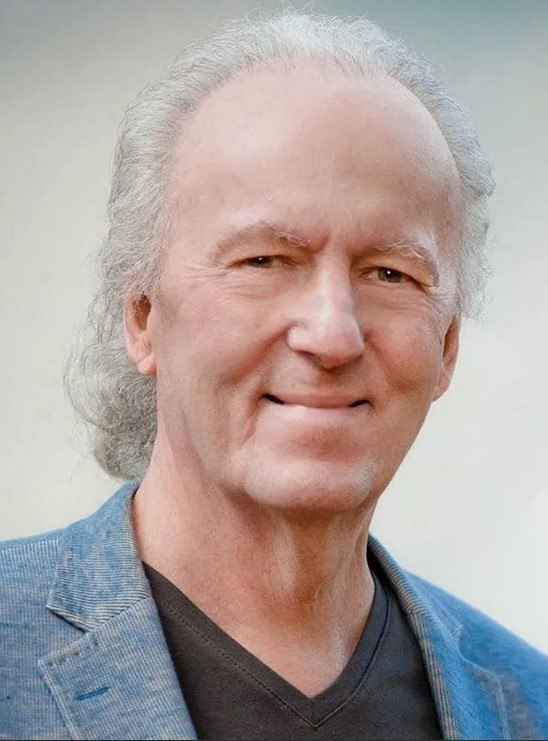

Мартин Лютер Кинг — американский баптистский проповедник, общественный деятель и активист, получивший известность как самый заметный представитель и лидер движения за гражданские права чернокожих в США с 1954 года до своей смерти в 1968 году. Кинг выступал за защиту гражданских прав с помощью ненасилия и гражданского неповиновения, тактик, вдохновлённых его христианскими убеждениями и ненасильственным активизмом Махатмы Ганди. Лауреат Нобелевской премии мира (1964) за борьбу с расовым неравенством через ненасильственное сопротивление.
Кинг был посмертно награждён Президентской медалью Свободы и Золотой медалью Конгресса США. День Мартина Лютера Кинга был учреждён в нескольких городах и штатах, начиная с 1971 года, и начал праздноваться на федеральном уровне с 1986 года. Сотни улиц в США переименованы в его честь, Кингу также был перепосвящён округ в штате Вашингтон. Мемориал Мартину Лютеру Кингу на Национальной аллее в Вашингтоне был открыт в 2011 году.
Нельсон Холилала Мандела — южноафриканский государственный и политический деятель. Президент Южно-Африканской Республики с 10 мая 1994 по 14 июня 1999 года, один из самых известных активистов в борьбе за права человека в период существования апартеида, за что 27 лет сидел в тюрьме. Лауреат Нобелевской премии мира в 1993 году.
С 2004 года — Дельфийский посол для молодёжи и почётный член Международного Дельфийского совета. В июле 2014 года на родине Нельсона Манделы (в Умтате и Мфезо), а также в Ист-Лондоне проходил специальный Дельфийский саммит, приуроченный к 20-летию победы демократии в ЮАР и 20-летию Международного Дельфийского совета.
В ЮАР Нельсон Мандела также известен как Мадиба (одно из клановых имён народа коса).
Джон Фицджералд Кеннеди — американский политический и государственный деятель, 35-й президент США (1961—1963) от Демократической партии. Член Палаты представителей США (1947—1953) от штата Массачусетс, в 1953—1960 годах работал сенатором от Массачусетса. Его президентство пришлось на особо напряжённый период Холодной войны. По мнению большинства граждан страны, Кеннеди входит в десятку величайших американских президентов в истории.
В современном общественном сознании Кеннеди чаще всего связывают с его убийством, потрясшим весь мир, многочисленные гипотезы разрешения которого выдвигаются по сей день.